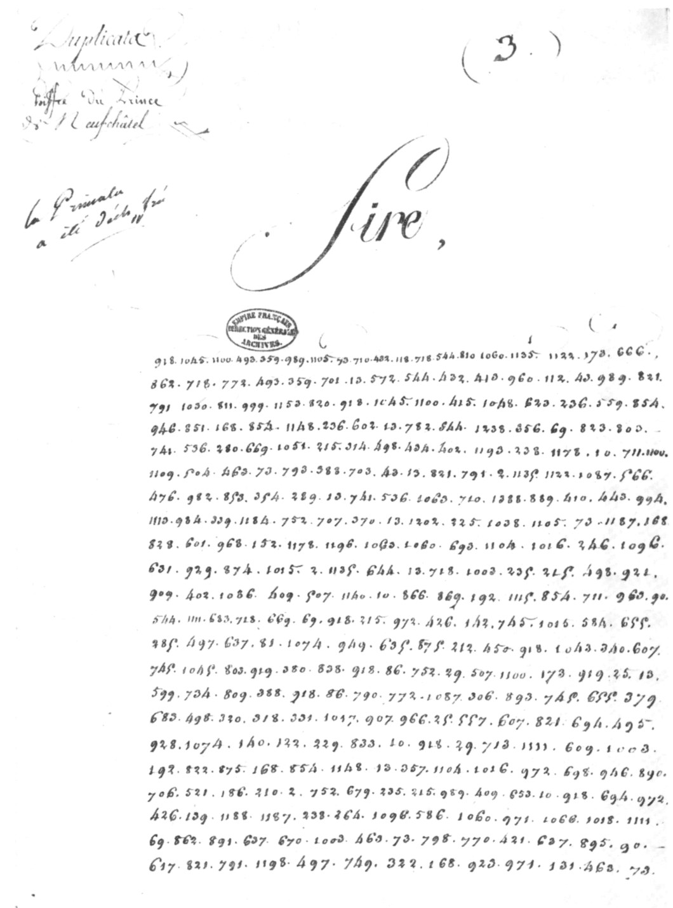

Text
The letter, line by line
The 22 lines of page 3 as read on the 1969 plate [1]. Under each number, its value in the deciphering table of the Great Cipher of 1812 [5]; on the right, the reading (in French, the language of the letter).

Group by group
Hovering over a number shows the full table entry (with its alternative endings). 1063dépêche group corrected from the plate, compared with the online transcription; 851[pli] uncertain value or probable slip. Signs: “.” full stop, “;” semicolon, “¶” new paragraph.
| Line | Cipher groups and table values | Reading (French) |
|---|---|---|
| 1 | 918je1045n1100ait493aucun359nouveau989de1105Votre73Majesté710de432puis118so718n544de810par1060de1135pa1122ri173s666; | Je n'ai aucunes nouvelles de Votre Majesté depuis son départ de Paris ; |
| 2 | 862je718n772ait493aucun359nouveau701direct13de572France544de432puis413les960lettre112du43Ministre989de821la | je n'ai aucune nouvelle directe de France depuis les lettres du Ministre de la |
| 3 | 791guerre1030du811cinq999octobre1153.820¶918je1045n1100ait415ja1048mais623reçu236ni559compagnie854p | Guerre du cinq octobre. ¶ Je n'ai jamais reçu ni com-p- |
| 4 | 946té851[pli: ni?]168ra854p1148port236ni602État13de782situation844vraisemblable1238l'armée du Nord de l'Espagne356préjudice69que823aye803été | -te [ni ?] rapport ni état de situation vraisemblable de l'armée du Nord de l'Espagne, quel[le]s qu'aient été |
| 5 | 741me536S280demande669re1051[pli] ité215re314es498a434cet402E1193ga238R1178D10.711J1100ait | mes demandes réitérées à cet égard. J'ai |
| 6 | 1109adresse504a463votre73Majesté793impérial388et703aux43Ministre13de821la791guerre2a1135pa1122ri1087S566des | adressé à Votre Majesté impériale et au[x] Ministre de la Guerre à Paris des |
| 7 | 476qua982dra853bli354ca289ta13de741me536S1063dépêche710de1388Salamanque889mon410dernier443courrier994ayant | quadruplicata de mes dépêches de Salamanque, mon dernier courrier ayant |
| 8 | 1113été984enlèvement339avec1184tout752la707correspondant370près13de1202Valladolid325paix1038¶1105Votre73Majesté1187trouve168ra | été enlevé avec toute la correspondance près de Valladolid [.] ¶ Votre Majesté trouvera |
| 9 | 828ci601jo968int152copie1178D1196un1063dépêche1060de693mon1104sieur1016le246général1096re | ci-joint copie d'une dépêche de Monsieur le général Re- |
| 10 | 631il929le874qui1015m2a1135pa644ru13de718n1003a235tu215re498a921être | -ille, qui m'a paru de nature à être |
| 11 | 909mis402E1086sous409ses507y1140eux10.866C869est192la1115premier854p711J963ec90E | mise sous ses yeux. C'est la première pièce |
| 12 | 544de1111ce683ge718n669re69que918je215re972C426ois142;745elle1015m584éclaircir655E | de ce genre que je reçois ; elle m'éclaire |
| 13 | 285sur497la637po81si1074tion949des635province875du212Nord450;918je1043savoir340bien607que | sur la position des provinces du Nord ; je sais bien que |
| 14 | 745elle1045n803été919pas380bon838mais918je86ne752la29cro507y1100ait173s919pas25aussi13de | elle n'était pas bonne, mais je ne la croyais pas aussi dé- |
| 15 | 599plo734ra809ble388et918je86ne790pensée772ait1087S306pas893que745elle655E379xi | -plorable, et je ne pensais pas qu'elle exi- |
| 16 | 683ge498a320C318des331sa1017cri907fi966ces25aussi557grand607que821la694con495car | -geât des sacrifices aussi grands que la concen- |
| 17 | 928tra1074tion140dont122il229est833question10.918je29cro713is1111ce609pendant1003a | -tration dont il est question. Je crois cependant à |
| 18 | 192la822vérité875du168ra854p1148port13de357mon1104sieur1016le972C698on946té890R | la vérité du rapport de Monsieur le comte R- |
| 19 | 706ei521L186le210et2a752la679droit235tu215re989de409ses653intention10.918je694con972C | -eille et à la droiture de ses intentions. Je con- |
| 20 | 426ois139qu'ils1188faut1187trouve238R264un1096re586me1060de971et1066vo1018ici1111ce | -çois qu'il faut trouver un remède, et voici ce |
| 21 | 69que862je891pro637po670se1003a463votre73Majesté798dans770L421hi637po895tes90E | que je propose à Votre Majesté dans l'hypothèse |
| 22 | 617ou821la791guerre1198avec497la749Russe322continue168ra923it971et131ue463votre73Majesté | où la guerre avec la Russie continuerait et [q]ue Votre Majesté… |
The running text
French text with modernised spelling and punctuation; in square brackets, what the cipher does not give or gives wrongly.
« Sire, je n'ai aucunes nouvelles de Votre Majesté depuis son départ de Paris ; je n'ai aucune nouvelle directe de France depuis les lettres du Ministre de la Guerre du cinq octobre.
Je n'ai jamais reçu ni compte ni rapport ni état de situation vraisemblable de l'armée du Nord de l'Espagne, quel[le]s qu'aient été mes demandes réitérées à cet égard. J'ai adressé à Votre Majesté impériale et au Ministre de la Guerre à Paris des quadruplicata de mes dépêches de Salamanque, mon dernier courrier ayant été enlevé avec toute la correspondance près de Valladolid.
Votre Majesté trouvera ci-joint copie d'une dépêche de Monsieur le général Reille, qui m'a paru de nature à être mise sous ses yeux. C'est la première pièce de ce genre que je reçois ; elle m'éclaire sur la position des provinces du Nord ; je sais bien qu'elle n'était pas bonne, mais je ne la croyais pas aussi déplorable, et je ne pensais pas qu'elle exigeât des sacrifices aussi grands que la concentration dont il est question. Je crois cependant à la vérité du rapport de Monsieur le comte Reille et à la droiture de ses intentions. Je conçois qu'il faut trouver un remède, et voici ce que je propose à Votre Majesté dans l'hypothèse où la guerre avec la Russie continuerait et [q]ue Votre Majesté… »
Translation
“Sire, I have had no news from Your Majesty since your departure from Paris; I have had no direct news from France since the letters of the Minister of War of the fifth of October.
I have never received any account, any report or any credible return of the state of the Army of the North of Spain, whatever my repeated requests in this regard. I have sent Your Imperial Majesty and the Minister of War in Paris quadruplicates of my dispatches from Salamanca, my last courier having been seized, with all the correspondence, near Valladolid.
Your Majesty will find enclosed a copy of a dispatch from General Reille, which seemed to me worth placing before you. It is the first document of this kind that I have received; it enlightens me on the situation of the northern provinces; I know well that it was not good, but I did not believe it so deplorable, and I did not think that it would require sacrifices as great as the concentration in question. I nevertheless believe in the truth of Count Reille's report and in the uprightness of his intentions. I understand that a remedy must be found, and here is what I propose to Your Majesty in the event that the war with Russia should continue and that Your Majesty…”
End of page 3; the rest of the letter has not been published.
Reading notes
- The encoder splits words into syllables and letters when a word is not in the nomenclator: “qua-dra-bli-ca-ta”, “Re-il-le”, “l'hi-po-tes-e”, “con-ç-ois”.
- Table entries stand for several forms:
359“nouveau, x, elles”,1113“été, vis, oit”,1043“savoir, s, t” (here “sais”). 356(“préjudice”) and325(“paix”) are read as such on the plate, but the sense requires656(“quel”) and225(full stop): probable slips by the encoder or copyist.851and1051are illegible in the table (fold);1051= “ité” is required by “réitérées”.